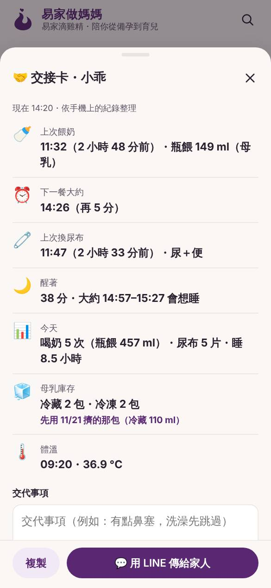
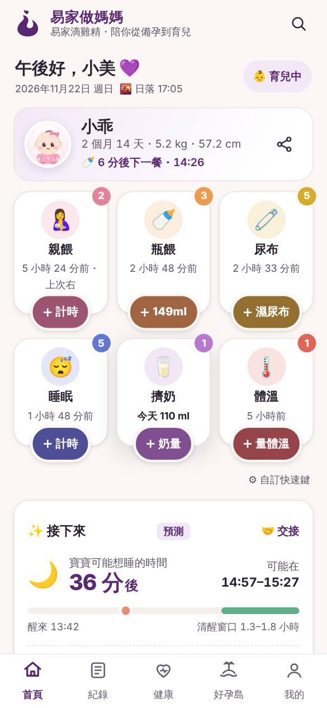
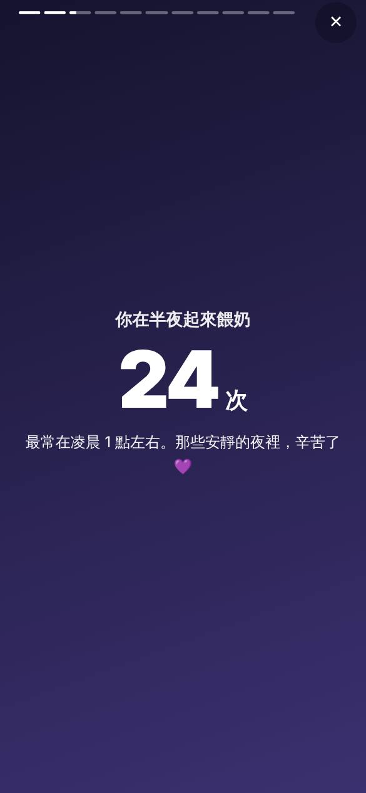
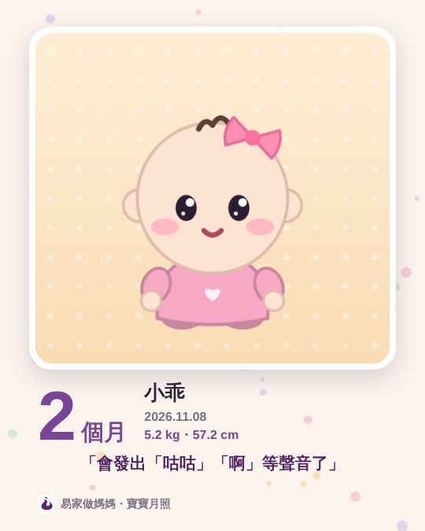

P.04專題
一位媽媽的 24 小時
小美的寶寶小乖兩個多月大，這是她的一天。人物是虛構的，畫面都是 App 的實際畫面。
-
凌晨
夜奶陪伴
凌晨按下親餵，螢幕自己變暗，計時的字放大，換邊按一下就好。有會員服務時，還會顯示這個時間有幾位媽媽也醒著。
-
清晨
交接卡
換爸爸顧寶寶。上一餐幾點、喝了多少、尿布、睡多久、正在計時的項目，一張卡講清楚，還能留一句交代。開了家人共用，按一下就傳到爸爸手機。

-
上午
接下來
首頁的「接下來」會算下一餐大概幾點、什麼時候可能想睡。算錯了，以寶寶為準。

-
下午
寶寶月照
每個月的這一天，App 會提醒拍一張。選相框、寫一句話，身高體重自動帶進去。

-
晚上
成長回顧
滿月、百日、第一年，手機裡的紀錄自己變成一段故事：半夜起來餵了幾次、換了幾片尿布、第一次發出「咕咕」聲是哪一天。在手機上做，不會上傳。

P.10紀錄
單手按一下就記好
首頁最常用的七種紀錄。點一張，下面的試玩就打開那一種。
弧形扇卡 arc fan cards
另外還有用藥、看診，和母乳庫存、疫苗、發展里程碑。
P.12衛教
好孕島
衛教做成一座座小島，從備孕到上小學一共 35 站。每一站是幾張重點小卡和一份打卡清單，每一則都附出處。
立體環視卡 3D ring carousel
- 站 01葉酸果園備孕葉酸要提早吃。計畫懷孕時就開始補充：寶寶的神經管在懷孕極早期就形成。出處：國健署、美國 CDC
- 站 02爸爸備孕健身房備孕精子養成要 2～3 個月。戒菸、少喝酒這些調整，要提早開始才看得到效果。出處：英國 NHS
- 站 05害喜小屋懷孕孕吐很常見。不一定只在早上，多數媽媽到孕中期前會慢慢緩解。出處：國健署孕產兒關懷網站
- 站 06產檢診所懷孕國健署產檢補助。14 次產前檢查、3 次超音波，實際內容以最新公告為準。出處：國健署
- 站 11胎動小站懷孕第一次感覺胎動。大約在 18～20 週；第一胎可能晚一點才發現。出處：國健署孕產兒關懷網站
- 站 12待產包倉庫懷孕什麼時候準備。32～35 週前準備好，放在門口或車上。出處：國健署孕產兒關懷網站
- 站 13產房燈塔生產真陣痛和假陣痛。真陣痛越來越規律、越來越密，休息或換姿勢也不會緩解。出處：美國婦產科醫學會
- 站 14月子溫泉坐月子惡露的變化。顏色會由紅轉淡；量突然變多、有異味或發燒，請就醫。出處：國健署孕產兒關懷網站
- 站 16哺乳咖啡館育兒WHO 的建議。純母乳哺育到 6 個月，之後加副食品，可以持續到 2 歲。出處：世界衛生組織
- 站 19睡眠森林育兒安全睡眠。仰睡，床上不放枕頭、棉被和絨毛玩具，同房不同床。出處：國健署、美國兒科醫學會
- 站 21副食品廚房育兒什麼時候開始。約 4～6 個月、頭頸穩、能扶著坐時，先和兒科醫師討論。出處：國健署孕產兒關懷網站
- 站 24學步小路育兒走路有早有晚。多在 9～18 個月之間學會，每個孩子的節奏不同。出處：世界衛生組織
P.14紀念
寶寶月照
每個月一張，相框四選一，身高體重自動帶進去。一年後拼成一張成長拼貼。
精選畫廊卡 featured gallery cards



奶油米色的底，像一本相簿。
示範用的是 App 畫的 Q 版寶寶，放上你的照片就是這樣。照片只存在你的手機。
P.18實際操作
真的 App，現在就能玩
這是完整的易家做媽媽，放了虛構的媽媽「小美」和寶寶「小乖」兩週的範例紀錄。隨便點、隨便記，都只存在這個試玩裡，不會跑進你自己的 App。
在手機上：手指放在框框外面滑，就能繼續往下看。
我們的承諾
- 紀錄預設只存在你的手機。不用登入也能用；換手機時，可以匯出備份檔帶走。
- 照片留在手機裡。月照、超音波照片都存在你的手機；Q 版頭像也是在手機上畫出來的。
- 家人共用是端對端加密。鑰匙只放在邀請連結裡，伺服器收到的是看不懂的亂碼。
- 健康紀錄不上分享卡。用藥、體溫、看診不會出現在分享卡，也不會出現在交接卡傳出去的 LINE 文字裡。
- 衛教內容附出處。每一則小知識都能點開來源看原文。App 只是參考，身體不舒服請找醫師。